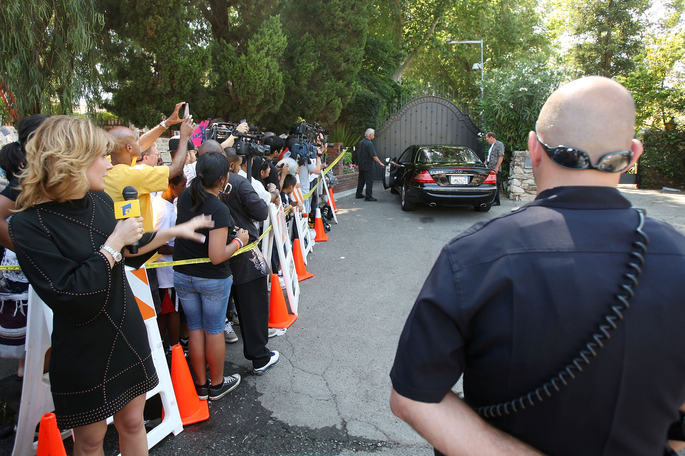

Figure 16.1
Michael Jackson’s death at age 50 caused a frenzy of media attention. Here, fans and the media have gathered at Jackson’s mansion hoping to catch a glimpse of Jackson’s family.
As we saw in Chapter 14 "Ethics of Mass Media", when superstar Michael Jackson died of a cardiac arrest in June 2009, the news sent media outlets all over the world into a frenzy, providing journalists, bloggers, authors, and television news anchors with months of material. The pop singer’s death is a good example of how information is disseminated through the various media channels. Unafraid to publish unconfirmed rumors that may have to be retracted later, blogs and gossip websites are often first to produce celebrity news stories. Digital sources also have the advantage of immediacy—rather than waiting for a physical newspaper to be printed and delivered, a time-consuming process that occurs just once a day, bloggers and online reporters can publish a story on the Internet in the time it takes to type it out. Within 40 minutes after the Los Angeles Fire Department arrived at Jackson’s home, a small entertainment website called X17online posted the news that Jackson had suffered cardiac arrest. Twenty minutes later, larger entertainment site TMZ picked up the information and distributed it to hundreds of thousands of people via RSSA content delivery vehicle used to syndicate news and other web content, enabling consumers to automatically receive new digital content from a provider.—a web publishing technology that enables users to automatically receive new digital content from the provider. Multiple Wikipedia members updated Jackson’s biographical entry to include the news of his cardiac arrest before any major news networks or broadcasters had announced the news. By the time the cardiac arrest was reported on CNN’s official Twitter account two hours after the 911 call, Twitter users and TMZ reporters were already posting reports of the star’s death. The story created such a surge in online traffic that microblogging site Twitter temporarily shut down and Google returned an error message for searches of the singer’s name because it assumed it was under attack. An hour after the news of Jackson’s death hit the Internet, mainstream news sources such as The Los Angeles Times, MSNBC, and CNN confirmed the information, and it was immediately disseminated among local and national television and radio stations.
The order in which the news broke among the major media outlets was a source of contention. Many outlets around the world were reluctant to rely on the TMZ report, because the website was primarily known for its frivolous content, aggressive paparazzi tactics, and embarrassing celebrity photographs. Many of the more reputable news sources, including CNN, waited until both the coroner’s office and The Los Angeles Times had confirmed Jackson’s death before announcing it as a fact to viewers, preferring to release an accurate story rather than to gain an edge over other news outlets (even though both TMZ and CNN are owned by Time Warner). “Given the nature of the story we exercised caution,” said CNN spokesman Nigel Pritchard.Scott Collins and Greg Braxton, “TV Misses Out as Gossip Website TMZ Reports Michael Jackson’s Death First,” Los Angeles Times, June 26, 2009, http://articles.latimes.com/2009/jun/26/local/me-jackson-media26. However, Harvey Levin, managing editor of TMZ, denied that his site was less credible than any other news source. “TMZ is a news operation and we are fact based,” he said. “Our goal is always to take stories and factually source them and present them. We’re not a gossip site…. We have things researched, we have things lawyered, we make lots of phone calls…. I mean it’s the same principle.”Neal Karlinsky and Eloise Harper, “Michael Jackson’s Death Puts Us Weekly and TMZ at the Head of the Pack,” ABC News, July 1, 2009, http://abcnews.go.com/Nightline/MichaelJackson/story?id=7971440&page=1. Despite Levin’s protests, it appears that, for now at least, old media stalwarts such as the Associated Press and The LA Times have the advantage of reliability over (sometimes) faster sources with less credibility. As Adam Fendelman, founder of entertainment news site HollywoodChicago.com, noted, “The Web and TV phenomenon that TMZ is is very good at fast-breaking and late-breaking news, but there’s an inherent problem with trust in the everyday consumer’s mind”Wailin Wong, “Michael Jackson Death News: Online Activity Heats Up Twitter and Google, Slows Down Some Sites,” Chicago Tribune, June 26, 2009, http://www.chicagotribune.com/topic/wghp-story-jackson-media-coverage-090625,0,4191041.story. (see Section 6.4 "Influence of New Technology" for more advantages and disadvantages of new media).
Once news of Michael Jackson’s death had been reported through all the major international media outlets, a tabloid war broke out, with newspapers and magazines determined to get the “story behind the story.” Speculation about the cause of death and the role played by prescription drugs fed salacious media reports in the tabloids and news and gossip magazines long after the initial news story broke. Other newspapers and magazines, including Time and Entertainment Weekly, focused on tribute articles that reviewed Jackson’s long list of accomplishments and reflected on his musical legacy, and the four major broadcast networks (ABC, NBC, Fox, and CBS) aired documentaries covering the pop star’s life. In the days and weeks following Jackson’s death, radio stations abandoned their playlists in favor of back-to-back Michael Jackson hits, contributing to a huge upswing in record sales. Media coverage continued for many months, saturating newspapers, magazines, and television and radio stations—when the coroner’s report ruled Jackson’s death a homicide in August 2009, during the funeral service a month later, and again in February 2010 when Jackson’s doctor was charged with involuntary manslaughter for administering a powerful sedative to help the star sleep.
Although the book-publishing industry was at a disadvantage because of the time delay between receiving news of Jackson’s death and the ability to physically place books on shelves, many authors, agents, and publishers were able to capitalize on the star’s tragic story. Numerous biographies were published in the months following Jackson’s death, along with several explosive “tell-all” books by people close to the star that provided intimate details about his private life. To compensate for their lack of immediacy, books have several advantages over other print and web sources, primarily the ability to include greater depth of information on a subject than any other form of media. Fans eager for more information about their idol and his life eagerly purchased Jackson biographies, including his 1988 autobiography Moonwalk, which was re-released in October 2009.
Other, less immediate forms of media were also commercially successful, including a posthumous film titled This Is It, named after the much-anticipated comeback tour that was supposed to start just 3 weeks after Jackson’s death. Composed of rehearsal footage from the concerts, the documentary was shown on more than 3,400 domestic screens during a sold-out 2-week run in October and November 2009. An accompanying two-disc soundtrack album, featuring classic Jackson hits along with new track “This Is It,” topped the Billboard 200 chart upon its release in November 2009, selling 373,000 copies in its first week of release. A spin-off DVD also topped the U.S. sales chart in February 2010, selling more than 1.2 million copies the week of its release. Posthumous sales of Jackson’s earlier material also generated huge amounts of revenue. In the first 4 months after Jackson’s death, Forbes magazine estimated that his estate made $90 million in gross earnings. Music industry consultant Barry Massarsky commented, “Nothing increases the value of an artist’s catalog [more] than death … an untimely death.”Lauren Streib, “Michael Jackson’s Money Machine,” Forbes, October 27, 2009, http://www.forbes.com/2009/10/27/michael-jackson-earnings-since-death-dead-celebs-09-business-entertainment-jackson.html. This cross-media approach is typical of every major news story, although the controversy surrounding Jackson throughout his life, the circumstances of his death, and the sheer magnitude of his contribution to pop history meant that the performer’s demise had a particularly widespread effect.
As the Michael Jackson example shows, the number of people receiving news from the Internet is rapidly growing, although television remains the dominant source of information. Currently, most Americans use multiple resources for news. In a 2010 survey, 92 percent of people said they obtained their daily news from a variety of sources, including online news sites, blogs, social networking sites such as Twitter and Facebook, television, newspapers, and radio.Suzanne Choney, “Internet, TV Main News Sources for Americans,” MSNBC, March 1, 2010, http://www.msnbc.msn.com/id/35607411/ns/technology_and_science-tech_and_gadgets/. On a typical day, 6 in 10 American adults get their news online, placing the Internet third behind local television news and national or cable television news.Suzanne Choney, “Internet, TV Main News Sources for Americans,” MSNBC, March 1, 2010, http://www.msnbc.msn.com/id/35607411/ns/technology_and_science-tech_and_gadgets/. The use of smartphone technology is contributing to the ease with which people can access online news; more than a third of cell phone owners use their phones to check for weather, news, sports, and traffic information.Suzanne Choney, “Internet, TV Main News Sources for Americans,” MSNBC, March 1, 2010, http://www.msnbc.msn.com/id/35607411/ns/technology_and_science-tech_and_gadgets/.
For young people in particular, the rise in social networking use is transforming the news from a one-way passage of information into a social experience. People log on to their Facebook or Twitter accounts, post news stories to their friends’ web pages, comment on stories that interest them, and react to stories they have recently read. During a survey of students at the University of Texas at Austin, senior Meg Scholz told researchers that she scanned news websites and blogs every time she went online to check her email, eliminating the need to pick up a newspaper or watch television news. “It’s not that I have anything against a printed newspaper,” she said. “But for my lifestyle the Internet is more accessible.”Peter Johnson, “Young People Turn to the Web for News,” Media Mix, USA Today, March 22, 2006, http://www.usatoday.com/life/columnist/mediamix/2006-03-22-media-mix_x.htm. Other Internet users appreciate the ability to filter news and information that is relevant to them; 28 percent of those surveyed said they customize their social networking home pages to include news from sources or on topics that interest them.Suzanne Choney, “Internet, TV Main News Sources for Americans,” MSNBC, March 1, 2010, http://www.msnbc.msn.com/id/35607411/ns/technology_and_science-tech_and_gadgets/. Researchers at the Pew Research Center’s Internet & American Life Project, the organization that conducted the survey, speculate that this personalization of news is a result of the constant stream of information in modern life. Pew Research Center Director Lee Rainie commented, “People feel more and more pressed about the volume of information flowing into their lives. So, they customize the information flow in order to manage their lives well and in order to get the material that they feel is most relevant to them.”Suzanne Choney, “Internet, TV Main News Sources for Americans,” MSNBC, March 1, 2010, http://www.msnbc.msn.com/id/35607411/ns/technology_and_science-tech_and_gadgets/. Although television remains the primary source of news for most Americans, Internet and mobile technology is changing the structure of information delivery methods to audiences, making it more portable, more personalized, and more participatory.
Conduct a survey among your friends, family, and classmates to find out where they get their news on a regular basis. Then respond to the following short-answer questions. Each response should be a minimum of one paragraph.